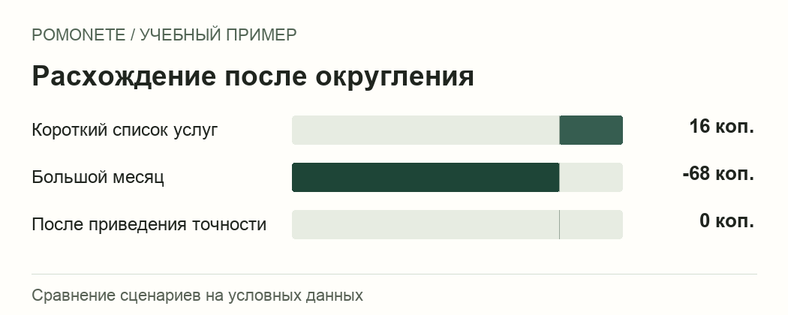

Селлер Яндекс Маркета и копейки в сверке итогов
Почему округление каждой строки может изменить контрольную сумму и как это отследить.
В отчёте магазина посуды по Яндекс Маркету суммы похожи, но отличаются на копейки. Это может быть свойством округления, а иногда скрывает потерянную строку. Покажем, как провести сверку точности без произвольной ручной поправки.
Как подготовить суммы
Сохраните числа в исходной точности и единицу денежных величин. Выясните, округляется ли каждое начисление по документу или только общий показатель. В примере все результаты записаны целыми копейками, чтобы сравнение не зависело от форматирования.
Чтобы пересобрать расчёт «Расхождение после округления» для своего магазина, перенесите в него исходные числа. В формуле A обозначает «сумма округлённых строк, коп.», B обозначает «округлённый итог исходника, коп.». Знак показывает направление разницы. Обе величины приводят к одному периоду и одной единице измерения до вычитания. Запишите рядом период и охват каждого среза. Если для одной строки известна только оценка, оставьте пояснение непосредственно рядом с ней: по итоговой цифре источник уже не восстановить.
Расхождение после округления = A − B
| Условие | Сумма округлённых строк, коп. | Округлённый итог исходника, коп. | Расхождение после округления |
|---|---|---|---|
| Короткий список услуг | 1 439 680 | 1 439 664 | 16 коп. |
| Большой месяц | 3 587 150 | 3 587 218 | -68 коп. |
| После приведения точности | 3 587 218 | 3 587 218 | 0 коп. |

В сценарии «Короткий список услуг» в формулу подставляем сумма округлённых строк, коп. = 1 439 680, округлённый итог исходника, коп. = 1 439 664. Получается 16 коп.. Сначала округлили отдельные рассчитанные строки, потом сложили.
В сценарии «Большой месяц» в формулу подставляем сумма округлённых строк, коп. = 3 587 150, округлённый итог исходника, коп. = 3 587 218. Получается -68 коп.. Расхождение больше в абсолютном размере. В выгрузке много небольших начислений.
В сценарии «После приведения точности» в формулу подставляем сумма округлённых строк, коп. = 3 587 218, округлённый итог исходника, коп. = 3 587 218. Получается 0 коп.. Граница округления согласована и остаток проверен повторно.
Если «Короткий список услуг» взять за исходную точку, «Большой месяц» меняет показатель «расхождение после округления» на -84 коп., а «После приведения точности» на -16 коп.. Между двумя последними строками разница составляет 68 коп. при вычитании второй из третьей. Смотрите, какой именно вход изменился между строками. Если менялись объём и условия одновременно, итог сравнения относится ко всему сочетанию.
От меньшего результата до большего в таблице 84 коп.. При переходе из «Большой месяц» со значением -68 коп. в «После приведения точности» со значением 0 коп. условия заданы явно. Этот интервал описывает три построенных случая, а для вероятности исходов нужна история. В рабочей записке полезно назвать минимальное значение, при котором сохранится ваше решение. Если такой порог попадает внутрь интервала, подтвердите спорный параметр до того, как менять процесс.
Почему допуск нельзя выбирать после результата
Если подгонять порог под текущую разницу, легко пропустить неверно обработанную строку. Введите правило по числу строк и ожидаемому округлению. Для крупных или систематических расхождений возьмите первичную детализацию и проверьте порядок.
У сценария «Большой месяц» есть входы: сумма округлённых строк, коп., округлённый итог исходника, коп.. Для каждого впишите, где взять факт и с каким временным лагом он поступит. Опорой будут исходная выгрузка, журнал загрузок и контрольные суммы. Если один источник обновляется быстрее другого, зафиксируйте общий момент доступности. При существенном разрыве покажите последние данные отдельным оперативным значением.
Перед обновлением отчёта сохраните источник, параметры запроса, время выгрузки и число строк на каждом шаге. Сначала проверяют ключ и единицу наблюдения, потом сравнивают итоговые суммы. Одно и то же значение в двух строках может быть законным: совпадение суммы само по себе слабо доказывает дубль. Подключив справочник, проверьте, какие записи не сопоставились, и разнесите их по причинам до пересчёта показателя.
Что сильнее всего меняет результат
Возьмём сценарий «Большой месяц» с результатом -68 коп.. В нём последовательно изменим «сумма округлённых строк, коп.», «округлённый итог исходника, коп.». Для каждого входа шаг близок к 10% его исходной величины, целые значения округлены. После каждого опыта возвращаем остальные числа к исходным. Так можно выяснить, какой вход уточнять первым, если перед решением мало времени.
- «Сумма округлённых строк, коп.» меняется с 3 587 150 на 3 945 865. При прежних остальных входах получается 358 647 коп., сдвиг составляет 358 715 коп..
- «Округлённый итог исходника, коп.» меняется с 3 587 218 на 3 945 940. При прежних остальных входах получается -358 790 коп., сдвиг составляет -358 722 коп..
При выбранных шагах самый крупный сдвиг дал параметр «округлённый итог исходника, коп.»: -358 722 коп.. Если в магазине эта величина меняется в узком диапазоне, подставьте обе его границы. Для связанных условий добавьте отдельную строку с одновременным изменением входов и поясните их связь в примечании.
Для отрицательной корректировки доведите сравнение до соответствующего документа. Операции с разными знаками не должны исчезать при фильтрации. В сумме они могут компенсироваться и маскировать расхождение, заметное только на выбранном типе.
Как сверить источник на малом примере
Подберите несколько разнонаправленных денежных строк и повторите оба порядка вычисления. Сохраните исходные числа, знак и правило обработки остатка. Если порядок из документов отличается, используйте его в проверке выгрузки и зафиксируйте отдельно.
При повторном импорте берите ту же исходную выборку и фиксируйте, какие записи действительно изменились. В стабильном отчёте сумма после второго прогона того же набора остаётся равной первой. Отложенные корректировки могут изменить поздний снимок, поэтому журнал версий пригодится для ответа на вопрос, когда возникло отличие. Дайте пользователю отчёта ссылку на строку, которую можно проверить вручную.
Для управленческой встречи подготовьте два небольших примера из рабочих записей. Первый сверяет «расхождение после округления» при базовых условиях «Короткий список услуг». Второй берёт изменившуюся строку и объясняет, какой источник исправлен. Селлеру Яндекс Маркета будет проще повторить расчёт на новой группе, если видны исходные значения, дата анализа и момент, когда итог станет достаточно точным для решения.